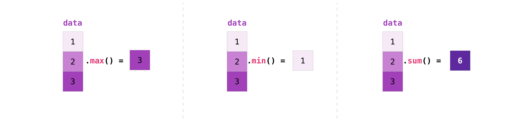

NumPy
Contents
NumPy#
Welcome to NumPy!#
NumPy (Numerical Python) is an open source Python library that’s used in almost every field of science and engineering. It’s the universal standard for working with numerical data in Python, and it’s at the core of the scientific Python and PyData ecosystems. NumPy users include everyone from beginning coders to experienced researchers doing state-of-the-art scientific and industrial research and development. The NumPy API is used extensively in Pandas, SciPy, Matplotlib, scikit-learn, scikit-image and most other data science and scientific Python packages.
The NumPy library contains multidimensional array and matrix data structures (you’ll find more information about this in later sections). It provides ndarray, a homogeneous n-dimensional array object, with methods to efficiently operate on it. (“Homogeneous” simply means the data within the object are all of the same type, whether string, integer, float, etc.) NumPy can be used to perform a wide variety of mathematical operations on arrays. It adds powerful data structures to Python that guarantee efficient calculations with arrays and matrices and it supplies an enormous library of high-level mathematical functions that operate on these arrays and matrices.
Learn more about NumPy here.
About Python Libraries#
NumPy is an example of a Python library. A library is a collection of files (called modules) that contains functions for use by other programs. Libraries provide ways of extending Python’s functionality in different ways. They may also contain data values (e.g., numerical constants), entire sample data sets, and other things.
The Python standard library is an extensive suite of modules that comes with Python itself. Everything we’ve done so far in this workshop has been part of the standard library. Many additional libraries are available; Syzygy has a large number of extra libraries already installed.
To use a library in a particular Jupyter notebook or other Python program, we must import it using the import statement, like this:
import numpy
Since some package names are long, and adding the name to every function can result in a lot of typing, Python also allows us to assign an alias — a shorter name — to a library when we import it. For example, the convention for NumPy is to give it the alias np like this:
import numpy as np
How to import NumPy#
Go ahead and import NumPy in your Jupyter notebook.
import numpy as np
np is a widely adopted alias for NumPy that you should use
so that anyone working with your code can easily understand it.
What’s the difference between a Python list and a NumPy array?#
NumPy gives you an enormous range of fast and efficient ways of creating arrays and manipulating numerical data inside them. While a Python list can contain different data types within a single list, all of the elements in a NumPy array should be homogeneous. The mathematical operations that are meant to be performed on arrays would be extremely inefficient if the arrays weren’t homogeneous.
Why use NumPy?
NumPy arrays are faster and more compact than Python lists. An array consumes less memory and is convenient to use. NumPy uses much less memory to store data and it provides a mechanism of specifying the data types. This allows the code to be optimized even further.
What is an array?#
An array is a central data structure of the NumPy library. An array is a
grid of values and it contains information about the raw data, how to
locate an element, and how to interpret an element. It has a grid of
elements that can be indexed in
various ways.
The elements are all of the same type, referred to as the
array dtype.
An array can be indexed by a tuple (Python data type similar to lists, but immutable) of nonnegative integers, by booleans,
by another array, or by integers. The rank of the array is the number
of dimensions. The shape of the array is a tuple of integers giving
the size of the array along each dimension.
One way we can initialize NumPy arrays is from Python lists, using nested lists for two- or higher-dimensional data.
For example:
a = np.array([1, 2, 3, 4, 5, 6])
or:
a = np.array([[1, 2, 3, 4], [5, 6, 7, 8], [9, 10, 11, 12]])
We can access the elements in the array using square brackets. When you’re accessing elements, remember that indexing in NumPy starts at 0. That means that if you want to access the first element in your array, you’ll be accessing element “0”.
print(a[0])
[1 2 3 4]
More information about arrays#
This section covers 1D array, 2D array, ndarray, vector,
matrix
You might occasionally hear an array referred to as a “ndarray,” which
is shorthand for “N-dimensional array.” An N-dimensional array is
simply an array with any number of dimensions. You might also hear
1-D, or one-dimensional array, 2-D, or two-dimensional array,
and so on. The NumPy ndarray class is used to represent both matrices
and vectors. A vector is an array with a single dimension (there’s
no difference between row and column vectors), while a matrix refers
to an array with two dimensions. For 3-D or higher dimensional
arrays, the term tensor is also commonly used.
What are the attributes of an array?
An array is usually a fixed-size container of items of the same type and size. The number of dimensions and items in an array is defined by its shape. The shape of an array is a tuple of non-negative integers that specify the sizes of each dimension.
In NumPy, dimensions are called axes. This means that if you have a 2D array that looks like this:
[[0., 0., 0.],
[1., 1., 1.]]
Your array has 2 axes. The first axis has a length of 2 and the second axis has a length of 3.
Just like in other Python container objects, the contents of an array can be accessed and modified by indexing or slicing the array. Unlike the typical container objects, different arrays can share the same data, so changes made on one array might be visible in another.
Array attributes reflect information intrinsic to the array itself. If you need to get, or even set, properties of an array without creating a new array, you can often access an array through its attributes.
Read more about array attributes here <arrays.ndarray>{.interpreted-text
role=”ref”} and learn about
array objects here <arrays>{.interpreted-text role=”ref”}.
How to create a basic array#
This section covers np.array(), np.zeros(), np.ones(),
np.empty(), np.arange(), np.linspace(), dtype
To create a NumPy array, you can use the function np.array().
All you need to do to create a simple array is pass a list to it. If you
choose to, you can also specify the type of data in your list.
You can find more information about data types here <arrays.dtypes>{.interpreted-text
role=”ref”}. :
import numpy as np
a = np.array([1, 2, 3])
You can visualize your array this way:

Be aware that these visualizations are meant to simplify ideas and give you a basic understanding of NumPy concepts and mechanics. Arrays and array operations can be more complicated than are captured here!
Besides creating an array from a sequence of elements, you can easily
create an array filled with 0’s:
np.zeros(2)
array([0., 0.])
Or an array filled with 1’s:
np.ones(2)
array([1., 1.])
Or even an empty array! The function empty creates an array whose
initial content is random and depends on the state of the memory. The
reason to use empty over zeros (or something similar) is speed -
just make sure to fill every element afterwards! :
# Create an empty array with 2 elements
np.empty(2)
array([1., 1.])
You can create an array with a range of elements:
np.arange(4)
array([0, 1, 2, 3])
And even an array that contains a range of evenly spaced intervals. To do this, you will specify the first number, last number, and the step size. :
np.arange(2, 9, 2)
array([2, 4, 6, 8])
You can also use np.linspace() to create an array with values that are
spaced linearly in a specified interval:
np.linspace(0, 10, num=5)
array([ 0. , 2.5, 5. , 7.5, 10. ])
Specifying your data type
While the default data type is floating point (np.float64), you can
explicitly specify which data type you want using the dtype keyword. :
x = np.ones(2, dtype=np.int64)
x
array([1, 1])
Learn more about creating arrays here <quickstart.array-creation>{.interpreted-text
role=”ref”}
Adding, removing, and sorting elements#
This section covers np.sort(), np.concatenate()
Sorting an element is simple with np.sort(). You can specify the axis,
kind, and order when you call the function.
If you start with this array:
arr = np.array([2, 1, 5, 3, 7, 4, 6, 8])
You can quickly sort the numbers in ascending order with:
np.sort(arr)
array([1, 2, 3, 4, 5, 6, 7, 8])
In addition to sort, which returns a sorted copy of an array, you can use:
argsort, which is an indirect sort along a specified) axis,
lexsort, which is an indirect stable sort on multiple keys,
searchsorted, which will find elements in a sorted array, and
partition, which is a partial sort.
To read more about sorting an array, see: sort.
If you start with these arrays:
a = np.array([1, 2, 3, 4])
b = np.array([5, 6, 7, 8])
You can concatenate them with np.concatenate():
np.concatenate((a, b))
array([1, 2, 3, 4, 5, 6, 7, 8])
Or, if you start with these arrays:
x = np.array([[1, 2], [3, 4]])
y = np.array([[5, 6]])
You can concatenate them with:
np.concatenate((x, y), axis=0)
In order to remove elements from an array, it’s simple to use indexing to select the elements that you want to keep.
To read more about concatenate, see: concatenate.
How do you know the shape and size of an array?#
This section covers ndarray.ndim, ndarray.size, ndarray.shape
ndarray.ndim will tell you the number of axes, or dimensions, of the
array.
ndarray.size will tell you the total number of elements of the array.
This is the product of the elements of the array’s shape.
ndarray.shape will display a tuple of integers that indicate the
number of elements stored along each dimension of the array. If, for
example, you have a 2-D array with 2 rows and 3 columns, the shape of
your array is (2, 3).
For example, if you create this array:
array_example = np.array([[[0, 1, 2, 3],
[4, 5, 6, 7]],
[[0, 1, 2, 3],
[4, 5, 6, 7]],
[[0 ,1 ,2, 3],
[4, 5, 6, 7]]])
To find the number of dimensions of the array, run:
array_example.ndim
3
To find the total number of elements in the array, run:
array_example.size
24
And to find the shape of your array, run:
array_example.shape
(3, 2, 4)
Can you reshape an array?#
This section covers arr.reshape()
Yes!
Using arr.reshape() will give a new shape to an array without changing
the data. Just remember that when you use the reshape method, the array
you want to produce needs to have the same number of elements as the
original array. If you start with an array with 12 elements, you’ll
need to make sure that your new array also has a total of 12 elements.
If you start with this array:
a = np.arange(6)
print(a)
[0 1 2 3 4 5]
You can use reshape() to reshape your array. For example, you can
reshape this array to an array with three rows and two columns:
b = a.reshape(3, 2)
print(b)
[[0 1]
[2 3]
[4 5]]
How to convert a 1D array into a 2D array (how to add a new axis to an array)#
This section covers np.newaxis, np.expand_dims
You can use np.newaxis and np.expand_dims to increase the dimensions
of your existing array.
Using np.newaxis will increase the dimensions of your array by one
dimension when used once. This means that a 1D array will become a
2D array, a 2D array will become a 3D array, and so on.
For example, if you start with this array:
a = np.array([1, 2, 3, 4, 5, 6])
a.shape
(6,)
You can use np.newaxis to add a new axis:
a2 = a[np.newaxis, :]
a2.shape
(1, 6)
You can explicitly convert a 1D array with either a row vector or a
column vector using np.newaxis. For example, you can convert a 1D
array to a row vector by inserting an axis along the first dimension:
row_vector = a[np.newaxis, :]
row_vector.shape
(1, 6)
Or, for a column vector, you can insert an axis along the second dimension:
col_vector = a[:, np.newaxis]
col_vector.shape
(6, 1)
You can also expand an array by inserting a new axis at a specified
position with np.expand_dims.
For example, if you start with this array:
a = np.array([1, 2, 3, 4, 5, 6])
a.shape
(6,)
You can use np.expand_dims to add an axis at index position 1 with:
b = np.expand_dims(a, axis=1)
b.shape
(6, 1)
You can add an axis at index position 0 with:
c = np.expand_dims(a, axis=0)
c.shape
(1, 6)
Indexing and slicing#
You can index and slice NumPy arrays in the same ways you can slice Python lists. :
data = np.array([1, 2, 3])
data[1]
2
data[0:2]
array([1, 2])
data[1:]
array([2, 3])
data[-2:]
array([2, 3])
You can visualize it this way:

You may want to take a section of your array or specific array elements to use in further analysis or additional operations. To do that, you’ll need to subset, slice, and/or index your arrays.
If you want to select values from your array that fulfill certain conditions, it’s straightforward with NumPy.
For example, if you start with this array:
a = np.array([[1 , 2, 3, 4], [5, 6, 7, 8], [9, 10, 11, 12]])
You can easily print all of the values in the array that are less than 5:
print(a[a < 5])
[1 2 3 4]
You can also select, for example, numbers that are equal to or greater than 5, and use that condition to index an array:
five_up = (a >= 5)
print(a[five_up])
[ 5 6 7 8 9 10 11 12]
You can select elements that are divisible by 2:
divisible_by_2 = a[a%2==0]
print(divisible_by_2)
[ 2 4 6 8 10 12]
Or you can select elements that satisfy two conditions using the & and
| operators:
c = a[(a > 2) & (a < 11)]
print(c)
[ 3 4 5 6 7 8 9 10]
You can also make use of the logical operators & and | in order to return boolean values that specify whether or not the values in an array fulfill a certain condition. This can be useful with arrays that contain names or other categorical values. :
five_up = (a > 5) | (a == 5)
print(five_up)
[[False False False False]
[ True True True True]
[ True True True True]]
You can also use np.nonzero() to select elements or indices from an
array.
Starting with this array:
a = np.array([[1, 2, 3, 4], [5, 6, 7, 8], [9, 10, 11, 12]])
You can use np.nonzero() to print the indices of elements that are,
for example, less than 5:
b = np.nonzero(a < 5)
print(b)
(array([0, 0, 0, 0]), array([0, 1, 2, 3]))
In this example, a tuple of arrays was returned: one for each dimension. The first array represents the row indices where these values are found, and the second array represents the column indices where the values are found.
If you want to generate a list of coordinates where the elements exist, you can zip the arrays, iterate over the list of coordinates, and print them. For example:
list_of_coordinates = list(zip(b[0], b[1]))
for coord in list_of_coordinates:
print(coord)
(0, 0)
(0, 1)
(0, 2)
(0, 3)
You can also use np.nonzero() to print the elements in an array that
are less than 5 with:
print(a[b])
[1 2 3 4]
If the element you’re looking for doesn’t exist in the array, then the returned array of indices will be empty. For example:
not_there = np.nonzero(a == 42)
print(not_there)
(array([], dtype=int64), array([], dtype=int64))
Learn more about indexing and slicing here and here.
Read more about using the nonzero function at: nonzero.
How to create an array from existing data#
This section covers slicing and indexing, np.vstack(),
np.hstack(), np.hsplit(), .view(), copy()
You can easily create a new array from a section of an existing array.
Let’s say you have this array:
a = np.array([1, 2, 3, 4, 5, 6, 7, 8, 9, 10])
You can create a new array from a section of your array any time by specifying where you want to slice your array:
arr1 = a[3:8]
arr1
array([4, 5, 6, 7, 8])
Here, you grabbed a section of your array from index position 3 through index position 8.
You can also stack two existing arrays, both vertically and
horizontally. Let’s say you have two arrays, a1 and a2:
a1 = np.array([[1, 1],
[2, 2]])
a2 = np.array([[3, 3],
[4, 4]])
You can stack them vertically with vstack:
np.vstack((a1, a2))
array([[1, 1],
[2, 2],
[3, 3],
[4, 4]])
Or stack them horizontally with hstack:
np.hstack((a1, a2))
array([[1, 1, 3, 3],
[2, 2, 4, 4]])
You can use the view method to create a new array object that looks at
the same data as the original array (a shallow copy).
Views are an important NumPy concept! NumPy functions, as well as operations like indexing and slicing, will return views whenever possible. This saves memory and is faster (no copy of the data has to be made). However it’s important to be aware of this - modifying data in a view also modifies the original array!
Let’s say you create this array:
a = np.array([[1, 2, 3, 4], [5, 6, 7, 8], [9, 10, 11, 12]])
Now we create an array b1 by slicing a and modify the first element
of b1. This will modify the corresponding element in a as well! :
b1 = a[0, :]
b1
array([1, 2, 3, 4])
b1[0] = 99
b1
array([99, 2, 3, 4])
a
array([[99, 2, 3, 4],
[ 5, 6, 7, 8],
[ 9, 10, 11, 12]])
Using the copy method will make a complete copy of the array and its
data (a deep copy). To use this on your array, you could run:
b2 = a.copy()
Learn more about copies and views here.
This section covers addition, subtraction, multiplication, division, and more
Once you’ve created your arrays, you can start to work with them. Let’s say, for example, that you’ve created two arrays, one called “data” and one called “ones”

You can add the arrays together with the plus sign.
data = np.array([1, 2])
ones = np.ones(2, dtype=int)
data + ones
array([2, 3])

You can, of course, do more than just addition!
data - ones
array([0, 1])
data * data
array([1, 4])
data / data
array([1., 1.])

Basic operations are simple with NumPy. If you want to find the sum of
the elements in an array, you’d use sum(). This works for 1D arrays,
2D arrays, and arrays in higher dimensions. :
a = np.array([1, 2, 3, 4])
a.sum()
10
To add the rows or the columns in a 2D array, you would specify the axis.
If you start with this array:
b = np.array([[1, 1], [2, 2]])
You can sum over the axis of rows with:
b.sum(axis=0)
array([3, 3])
You can sum over the axis of columns with:
b.sum(axis=1)
array([2, 4])
Broadcasting#
There are times when you might want to carry out an operation between an array and a single number (also called an operation between a vector and a scalar) or between arrays of two different sizes. For example, your array (we’ll call it “data”) might contain information about distance in miles but you want to convert the information to kilometers. You can perform this operation with:
data = np.array([1.0, 2.0])
data * 1.6
array([1.6, 3.2])

NumPy understands that the multiplication should happen with each cell.
That concept is called broadcasting. Broadcasting is a mechanism
that allows NumPy to perform operations on arrays of different shapes.
The dimensions of your array must be compatible, for example, when the
dimensions of both arrays are equal or when one of them is 1. If the
dimensions are not compatible, you will get a ValueError.
More useful array operations#
This section covers maximum, minimum, sum, mean, product, standard deviation, and more
NumPy also performs aggregation functions. In addition to min, max,
and sum, you can easily run mean to get the average, prod to get
the result of multiplying the elements together, std to get the
standard deviation, and more. :
data.max()
2.0
data.min()
1.0
data.sum()
3.0

Let’s start with this array, called “a” :
a = np.array([[0.45053314, 0.17296777, 0.34376245, 0.5510652],
[0.54627315, 0.05093587, 0.40067661, 0.55645993],
[0.12697628, 0.82485143, 0.26590556, 0.56917101]])
It’s very common to want to aggregate along a row or column. By default, every NumPy aggregation function will return the aggregate of the entire array. To find the sum or the minimum of the elements in your array, run:
a.sum()
4.8595784
Or:
a.min()
0.05093587
You can specify on which axis you want the aggregation function to be
computed. For example, you can find the minimum value within each column
by specifying axis=0:
a.min(axis=0)
array([0.12697628, 0.05093587, 0.26590556, 0.5510652 ])
The four values listed above correspond to the number of columns in your array. With a four-column array, you will get four values as your result.
Creating matrices#
You can pass Python lists of lists to create a 2-D array (or “matrix”) to represent them in NumPy. :
data = np.array([[1, 2], [3, 4], [5, 6]])
data
array([[1, 2],
[3, 4],
[5, 6]])

Indexing and slicing operations are useful when you’re manipulating matrices:
data[0, 1]
2
data[1:3]
array([[3, 4],
[5, 6]])
data[0:2, 0]
array([1, 3])

You can aggregate matrices the same way you aggregated vectors:
data.max()
6
data.min()
1
data.sum()
21

You can aggregate all the values in a matrix and you can aggregate them
across columns or rows using the axis parameter. To illustrate this
point, let’s look at a slightly modified dataset:
data = np.array([[1, 2], [5, 3], [4, 6]])
data
array([[1, 2],
[5, 3],
[4, 6]])
data.max(axis=0)
array([5, 6])
data.max(axis=1)
array([2, 5, 6])
 !
!
Once you’ve created your matrices, you can add and multiply them using arithmetic operators if you have two matrices that are the same size. :
data = np.array([[1, 2], [3, 4]])
ones = np.array([[1, 1], [1, 1]])
data + ones
array([[2, 3],
[4, 5]])
You can do these arithmetic operations on matrices of different sizes, but only if one matrix has only one column or one row. In this case, NumPy will use its broadcast rules for the operation. :
data = np.array([[1, 2], [3, 4], [5, 6]])
ones_row = np.array([[1, 1]])
data + ones_row
array([[2, 3],
[4, 5],
[6, 7]])
There are often instances where we want NumPy to initialize the values
of an array. NumPy offers functions like ones() and zeros(), and the
random.Generator class for random number generation for that. All you
need to do is pass in the number of elements you want it to generate:
np.ones(3)
array([1., 1., 1.])
np.zeros(3)
array([0., 0., 0.])
rng = np.random.default_rng() # the simplest way to generate random numbers
rng.random(3)
array([0.14775542, 0.76792023, 0.5468994 ])

You can also use ones(), zeros(), and random() to create a 2D
array if you give them a tuple describing the dimensions of the matrix:
np.ones((3, 2))
array([[1., 1.],
[1., 1.],
[1., 1.]])
np.zeros((3, 2))
array([[0., 0.],
[0., 0.],
[0., 0.]])
rng.random((3, 2))
array([[0.90737047, 0.05075307],
[0.4988847 , 0.63612395],
[0.55778692, 0.8432027 ]])

Generating random numbers#
The use of random number generation is an important part of the configuration and evaluation of many numerical and machine learning algorithms. Whether you need to randomly initialize weights in an artificial neural network, split data into random sets, or randomly shuffle your dataset, being able to generate random numbers (actually, repeatable pseudo-random numbers) is essential.
With Generator.integers, you can generate random integers from low
(remember that this is inclusive with NumPy) to high (exclusive). You
can set endpoint=True to make the high number inclusive.
You can generate a 2 x 4 array of random integers between 0 and 4 with:
rng.integers(5, size=(2, 4))
array([[3, 4, 1, 2],
[0, 2, 1, 4]])
How to get unique items and counts#
This section covers np.unique()
You can find the unique elements in an array easily with np.unique.
For example, if you start with this array:
a = np.array([11, 11, 12, 13, 14, 15, 16, 17, 12, 13, 11, 14, 18, 19, 20])
you can use np.unique to print the unique values in your array:
unique_values = np.unique(a)
print(unique_values)
[11 12 13 14 15 16 17 18 19 20]
To get the indices of unique values in a NumPy array (an array of first
index positions of unique values in the array), just pass the
return_index argument in np.unique() as well as your array. :
unique_values, indices_list = np.unique(a, return_index=True)
print(indices_list)
[ 0 2 3 4 5 6 7 12 13 14]
You can pass the return_counts argument in np.unique() along with
your array to get the frequency count of unique values in a NumPy array.
unique_values, occurrence_count = np.unique(a, return_counts=True)
print(occurrence_count)
[3 2 2 2 1 1 1 1 1 1]
This also works with 2D arrays! If you start with this array:
a_2d = np.array([[1, 2, 3, 4], [5, 6, 7, 8], [9, 10, 11, 12], [1, 2, 3, 4]])
You can find unique values with:
unique_values = np.unique(a_2d)
print(unique_values)
[ 1 2 3 4 5 6 7 8 9 10 11 12]
If the axis argument isn’t passed, your 2D array will be flattened.
If you want to get the unique rows or columns, make sure to pass the
axis argument. To find the unique rows, specify axis=0 and for
columns, specify axis=1. :
unique_rows = np.unique(a_2d, axis=0)
print(unique_rows)
[[ 1 2 3 4]
[ 5 6 7 8]
[ 9 10 11 12]]
To get the unique rows, index position, and occurrence count, you can use:
unique_rows, indices, occurrence_count = np.unique(
a_2d, axis=0, return_counts=True, return_index=True)
print(unique_rows)
[[ 1 2 3 4]
[ 5 6 7 8]
[ 9 10 11 12]]
print(indices)
[0 1 2]
print(occurrence_count)
[2 1 1]
This section covers arr.reshape(), arr.transpose(), arr.T
It’s common to need to transpose your matrices. NumPy arrays have the
property T that allows you to transpose a matrix.
You may also need to switch the dimensions of a matrix. This can happen
when, for example, you have a model that expects a certain input shape
that is different from your dataset. This is where the reshape method
can be useful. You simply need to pass in the new dimensions that you
want for the matrix:
data.reshape(2, 3)
array([[1, 2, 3],
[4, 5, 6]])
data.reshape(3, 2)
array([[1, 2],
[3, 4],
[5, 6]])

You can also use .transpose() to reverse or change the axes of an
array according to the values you specify.
If you start with this array:
arr = np.arange(6).reshape((2, 3))
arr
array([[0, 1, 2],
[3, 4, 5]])
You can transpose your array with arr.transpose():
arr.transpose()
array([[0, 3],
[1, 4],
[2, 5]])
You can also use arr.T:
arr.T
array([[0, 3],
[1, 4],
[2, 5]])
How to reverse an array#
This section covers np.flip()
NumPy’s np.flip() function allows you to flip, or reverse, the
contents of an array along an axis. When using np.flip(), specify the
array you would like to reverse and the axis. If you don’t specify the
axis, NumPy will reverse the contents along all of the axes of your
input array.
Reversing a 1D array
If you begin with a 1D array like this one:
arr = np.array([1, 2, 3, 4, 5, 6, 7, 8])
You can reverse it with:
reversed_arr = np.flip(arr)
If you want to print your reversed array, you can run:
print('Reversed Array: ', reversed_arr)
Reversed Array: [8 7 6 5 4 3 2 1]
Reversing a 2D array
A 2D array works much the same way.
If you start with this array:
arr_2d = np.array([[1, 2, 3, 4], [5, 6, 7, 8], [9, 10, 11, 12]])
You can reverse the content in all of the rows and all of the columns with:
reversed_arr = np.flip(arr_2d)
print(reversed_arr)
[[12 11 10 9]
[ 8 7 6 5]
[ 4 3 2 1]]
You can easily reverse only the rows with:
reversed_arr_rows = np.flip(arr_2d, axis=0)
print(reversed_arr_rows)
[[ 9 10 11 12]
[ 5 6 7 8]
[ 1 2 3 4]]
Or reverse only the columns with:
reversed_arr_columns = np.flip(arr_2d, axis=1)
print(reversed_arr_columns)
[[ 4 3 2 1]
[ 8 7 6 5]
[12 11 10 9]]
Read more about reversing arrays at flip.
Reshaping and flattening multidimensional arrays#
This section covers .flatten(), ravel()
There are two popular ways to flatten an array: .flatten() and
.ravel(). The primary difference between the two is that the new array
created using ravel() is actually a reference to the parent array
(i.e., a “view”). This means that any changes to the new array will
affect the parent array as well. Since ravel does not create a copy,
it’s memory efficient.
If you start with this array:
>>> x = np.array([[1 , 2, 3, 4], [5, 6, 7, 8], [9, 10, 11, 12]])
You can use flatten to flatten your array into a 1D array. :
x.flatten()
array([1, 2, 3, 4])
When you use flatten, changes to your new array won’t change the
parent array.
For example:
a1 = x.flatten()
a1[0] = 99
print(x) # Original array
[[1 2]
[3 4]]
print(a1) # New array
[99 2 3 4]
But when you use ravel, the changes you make to the new array will
affect the parent array.
For example:
a2 = x.ravel()
a2[0] = 98
print(x) # Original array
[[98 2]
[ 3 4]]
print(a2) # New array
[98 2 3 4]
How to access the docstring for more information#
This section covers help(), ?, ??
When it comes to the data science ecosystem, Python and NumPy are built
with the user in mind. One of the best examples of this is the built-in
access to documentation. Every object contains the reference to a
string, which is known as the docstring. In most cases, this
docstring contains a quick and concise summary of the object and how to
use it. Python has a built-in help() function that can help you access
this information. This means that nearly any time you need more
information, you can use help() to quickly find the information that
you need.
For example:
help(max)
Help on built-in function max in module builtins:
max(...)
max(iterable, *[, default=obj, key=func]) -> value
max(arg1, arg2, *args, *[, key=func]) -> value
With a single iterable argument, return its biggest item. The
default keyword-only argument specifies an object to return if
the provided iterable is empty.
With two or more arguments, return the largest argument.
Because access to additional information is so useful, IPython uses the
? character as a shorthand for accessing this documentation along with
other relevant information. IPython is a command shell for interactive
computing in multiple languages. You can find more information about
IPython here.
For example:
max?
You can even use this notation for object methods and objects themselves.
Let’s say you create this array:
a = np.array([1, 2, 3, 4, 5, 6])
Then you can obtain a lot of useful information (first details about a
itself, followed by the docstring of ndarray of which a is an
instance):
a?
This also works for functions and other objects that you create.
Just remember to include a docstring with your function using a string
literal (""" """ or ''' ''' around your documentation).
For example, if you create this function:
def double(a):
'''Return a * 2'''
return a * 2
You can obtain information about the function:
double?
You can reach another level of information by reading the source code of
the object you’re interested in. Using a double question mark (??)
allows you to access the source code.
For example:
double??
The ease of implementing mathematical formulas that work on arrays is one of the things that make NumPy so widely used in the scientific Python community.
For example, this is the mean square error formula (a central formula used in supervised machine learning models that deal with regression):

Implementing this formula is simple and straightforward in NumPy:

What makes this work so well is that predictions and labels can
contain one or a thousand values. They only need to be the same size.
You can visualize it this way:

In this example, both the predictions and labels vectors contain three
values, meaning n has a value of three. After we carry out
subtractions the values in the vector are squared. Then NumPy sums the
values, and your result is the error value for that prediction and a
score for the quality of the model.


How to save and load NumPy objects#
Note: We will go into much greater depth with file input/output (I/O) in future lectures. This is a quick primer on some core ideas using NumPy.
This section covers np.save, np.savez, np.savetxt, np.load,
np.loadtxt
You will, at some point, want to save your arrays to disk and load them
back without having to re-run the code. Fortunately, there are several
ways to save and load objects with NumPy. The ndarray objects can be
saved to and loaded from the disk files with loadtxt and savetxt
functions that handle normal text files, load and save functions
that handle NumPy binary files with a .npy file extension, and a
savez function that handles NumPy files with a .npz file
extension.
The .npy and .npz files store data, shape, dtype, and other information required to reconstruct the ndarray in a way that allows the array to be correctly retrieved, even when the file is on another machine with different architecture.
If you want to store a single ndarray object, store it as a .npy file
using np.save. If you want to store more than one ndarray object in a
single file, save it as a .npz file using np.savez. You can also save
several arrays into a single file in compressed npz format with
[savez_compressed]{.title-ref}.
It’s easy to save and load and array with np.save(). Just make sure
to specify the array you want to save and a file name. For example, if
you create this array:
a = np.array([1, 2, 3, 4, 5, 6])
You can save it as “filename.npy” with:
np.save('filename', a)
You can use np.load() to reconstruct your array:
b = np.load('filename.npy')
If you want to check your array, you can run:
print(b)
[1 2 3 4 5 6]
You can save a NumPy array as a plain text file like a .csv or
.txt file with np.savetxt.
For example, if you create this array:
csv_arr = np.array([1, 2, 3, 4, 5, 6, 7, 8])
You can easily save it as a .csv file with the name “new_file.csv” like this:
np.savetxt('new_file.csv', csv_arr)
You can quickly and easily load your saved text file using loadtxt():
np.loadtxt('new_file.csv')
array([1., 2., 3., 4., 5., 6., 7., 8.])
Exercises#
In class mini-lecture: Work through OLS example above#
- Create a matrix
- Get its shape
- Index and slice
- Create a submatrix
- Broadcast (simple artithmetic)
- Transpose and reshape
- Projection?
Cell In[132], line 1
- Create a matrix
^
SyntaxError: invalid syntax
Create a \(5 \times 4\) matrix \(M\).#
Fit \(M\) with a mixture of values.
Indexing and slicing#
Assign the entire third column to a variable. Call it third_col.
Print the value of the element in the second row and fourth column.
Create a submatrix comprised of the elements in the bottom right quadrant of \(M\). Call this sub-matrix \(M_sub\).
Broadcasting#
Redefine \(M\) by adding 1.2 to each element.
How many times did you type 1.2 to accomplish this?
Reshape \(M\) so that its rows become the columns and the columns become the rows.#
Before you do, what will the new shape of \(M\) be?
Now reshape \(M\) into a \(10 \times 2\) matrix#
This chapter has largely been adapted from NumPy’s User Guide. The portion on Python libraries was adapted from Aaron J. Newman’s textbook Data Science for Psychology and Neuroscience - in Python.